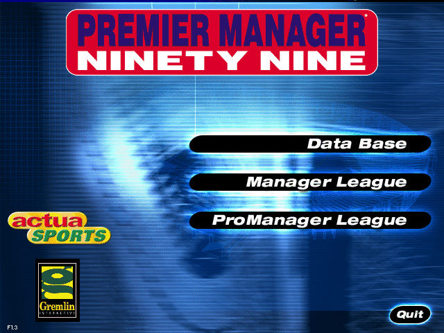
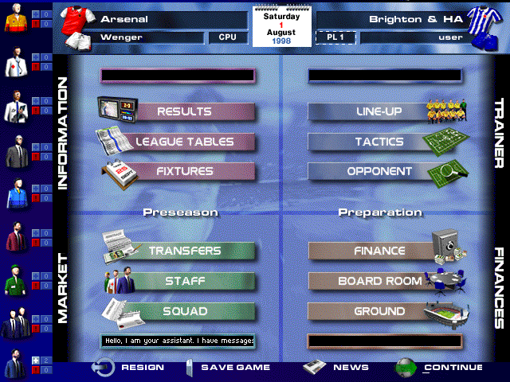

名稱：第一足球經理99 (Premier Manager 99／Premier Manager Ninety Nine，英文版) 簡介：Dinamic 1999年出品的足球團隊經營管理模擬遊戲，由Gremlin代理發行 [待補]。

備註：本版為1.3版 保護：光碟，破解碼： MANAGPRE.EXE, PM99.EXE 8A 44 24 10 8D 74 66 B8 2E 00 -- -- 75 12 8D 54 24 0C 52 90 90 -- -- -- -- -- 41 3A 5C 00 -- 5C 00 -- 需拷貝光碟裡的檔案aviso030.030、disk.id、Musicas.pkf與DbDat、SFX、Simuldat 等目錄到安裝目錄裡。 備註：若執行後顏色不正確，請搭配DxWnd（掛勾MANAGPER.EXE，可全螢幕）。